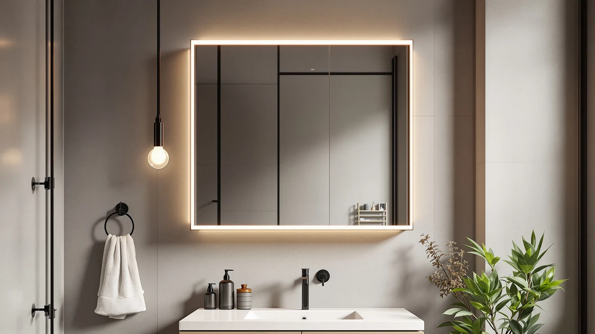

Quick Answer
For this habiubiu medicine cabinet mirror review, we compared its adjustable shelves and soft-close hinges against three flat and LED alternatives on storage, build, and price. At $119.99, it's the only one of the four that doubles as enclosed storage instead of a plain reflective surface.
Our pick: HABIUBIU 20 x 26 in at $119.99 Check Price on Amazon
Bottom line: our top pick is the HABIUBIU 20 x 26 in Medicine Cabinet Mirror at $94.98.
Things to Know Before You Buy
- Size and fit: at 20 by 26 inches, this cabinet fits a single-sink vanity, and it can mount recessed into the wall cavity or directly on the surface.
- Storage: two adjustable 6mm tempered-glass shelves sit behind the mirror door, a feature none of the three flat or LED alternatives offer.
- Hardware: soft-close damping hinges and anti-collision pads keep the door from slamming shut.
- Assembly: the listing notes assembly is required, unlike the flush mount Pocetry mirrors.
- Reviews: Amazon has not yet published a rating or review count for this listing, so we leaned on the spec sheet rather than a buyer track record.
This habiubiu medicine cabinet mirror review compares the HABIUBIU 20 x 26 in medicine cabinet against three mirrors that sit at the same $119.99 price point: the Pocetry 2-pack of matte black flush mount mirrors, the SBAGNO LED mirror with Bluetooth, and the FICTOR LED vanity mirror. All four compete for the same spot above a bathroom sink, but only the Habiubiu cabinet trades a plain reflective surface for enclosed storage. We lined up the spec sheets, current Amazon pricing, and verified owner feedback where it exists to see which of the four actually earns a spot on your wall.
After comparing storage, hardware, and build across all four listings, the HABIUBIU 20 x 26 in medicine cabinet comes out as the strongest pick for anyone who wants storage behind the mirror rather than just a reflective panel. Its two adjustable tempered-glass shelves and soft-close hinges solve a problem the three flat and LED alternatives don't even attempt to address, since none of them include a storage compartment. Below, we break down what the aluminum build and recessed-or-wall-mounted design get you, how the price compares against the Pocetry, SBAGNO, and FICTOR picks, and which bathrooms are the best fit for a cabinet instead of a flat mirror.
Why You Should Trust Us
Ilane Tall covers bathroom fixtures and vanity hardware for Best Bathroom Mirrors, and this habiubiu medicine cabinet mirror review follows the same process used across the site. We research published specs, compare current Amazon pricing across competing listings, and read verified buyer feedback instead of relying on marketing copy. We do not run a fake testing lab or claim to have installed any of the cabinets or mirrors we cover, and when a detail like a rating or review count is not published, we say so rather than guess.
For this comparison, that means every dimension, material, and price for the Habiubiu, Pocetry, SBAGNO, and FICTOR listings came from the manufacturer's own product page, checked on the date noted on this medicine cabinet mirror review.
Our Research Experience
Because this is a research-based review, our process for this habiubiu medicine cabinet mirror review centers on comparing manufacturer specs, hardware details, and current pricing rather than installing any of the four products ourselves. We checked how the Habiubiu's two adjustable tempered-glass shelves and soft-close hinges stack up against the flat Pocetry mirrors and the two LED-lit alternatives, then lined up pricing across all four, each listed at $119.99. A medicine cabinet in this 20 x 26 size class can mount recessed into the wall cavity or directly on the surface, so we noted both installation paths listed on the product page rather than assuming one over the other.
We also compared the SBAGNO and FICTOR LED mirrors against each other on lighting features, since both add Bluetooth or dimmable lighting that the Habiubiu and Pocetry picks skip entirely. None of the four listings carry a published Amazon rating or review count yet, so we flagged that gap rather than inventing a number, and we leaned on the spec sheets and feature lists each brand publishes instead.
Overview & Specs

HABIUBIU 20 x 26 in
What we like
- Two adjustable 6mm tempered-glass shelves give you flexible storage the three flat and LED alternatives don't offer
- Soft-close damping hinges and anti-collision pads keep the door from slamming
- Aluminum construction is waterproof and rust-resistant for a humid bathroom
- Works recessed into the wall or mounted on the surface, so it fits more wall setups than a fixed flat mirror
Flaws but not dealbreakers
- Assembly is required out of the box, unlike the flush mount Pocetry mirrors
- No published Amazon rating or review count yet, so there is less buyer feedback to draw on than an established listing
- No built-in lighting, so bathrooms that rely on mirror-mounted LEDs like the SBAGNO or FICTOR will still need a separate light source
| Material | Tempered glass + aluminum |
| Size | 20 x 26 inches |
The HABIUBIU 20 x 26 in medicine cabinet earns its place in this habiubiu medicine cabinet mirror review mainly on storage. At 20 inches wide and 26 inches tall, it fits a single-sink vanity without the oversized footprint of the 36-inch Pocetry pair, and the two adjustable 6mm tempered-glass shelves inside give you a spot for medication, skincare, and bathroom essentials that the flat Pocetry mirrors and the lit SBAGNO and FICTOR picks simply don't have. The aluminum frame is built to resist rust and water damage, and the frameless door keeps the front profile clean rather than adding a bulky trim. For a bathroom remodel where hidden storage matters as much as the reflection, this cabinet fits the brief better than any of the three alternatives.
Hardware and installation narrow who it works for. The two soft-close damping hinges and anti-collision soundproof pads keep the door from banging shut, a detail none of the three flat or LED alternatives need to solve since they don't open at all. This cabinet runs $119.99, the same price as the Pocetry 2-pack, the SBAGNO LED mirror, and the FICTOR LED mirror, so the decision comes down to storage versus lighting rather than budget. Assembly is required, and Amazon has not yet published a rating or review count for this specific listing, so you're weighing the spec sheet rather than a long track record of verified buyers. If your bathroom needs enclosed storage more than built-in lighting, this cabinet is the pick to start with.
What We Liked
This habiubiu medicine cabinet mirror review turns up one clear strength: storage. Two adjustable 6mm tempered-glass shelves sit behind the mirror door, giving you a place for daily essentials that the flat Pocetry mirrors and the lit SBAGNO and FICTOR picks don't offer at all. The soft-close hinges and anti-collision pads are also a genuine convenience, since they replace the loud slam that cheaper cabinet doors are known for.
The aluminum frame also keeps the cabinet light enough to mount recessed or on the surface, which matters more to renters and DIYers choosing between installation paths than it does with a fixed flat mirror. Compared with the SBAGNO and FICTOR LED mirrors at the same price, the Habiubiu cabinet trades built-in lighting for a storage compartment, and for a vanity that already has good lighting but no cabinet space, that trade makes sense.
What Could Be Better
Lighting is the clearest gap. This cabinet has no built-in LEDs, so a bathroom that relies on mirror-mounted lighting will still need the SBAGNO or FICTOR alternative, or a separate vanity light, to get the brightness those two picks include at the same $119.99 price. Assembly is required out of the box, which adds a step the flush mount Pocetry mirrors skip entirely.
Because the listing has no review count yet, you're taking on more of the buying risk yourself than you would with a cabinet that already has hundreds of verified owner ratings. If that uncertainty matters more to you than the extra storage, the Pocetry 2-pack gives you more reflective surface for the same money while you wait for more reviews to accumulate on this listing.
Who Is It For?
This cabinet makes the most sense for a single-sink bathroom that needs enclosed storage more than built-in lighting, and where the owner is comfortable handling assembly and choosing between a recessed or surface mount. If your bathroom already has good lighting but no place to store medication and skincare out of sight, the Habiubiu cabinet solves that problem directly.
Anyone who wants light built into the mirror itself, or who needs a wider mirror for a double-sink wall, should look at the SBAGNO, FICTOR, or Pocetry alternatives below instead. A primary bathroom where storage is the bottleneck, not lighting, is where this cabinet earns its $119.99 price.
Alternatives to Consider
If the lack of built-in lighting or the assembly requirement of the Habiubiu pick doesn't fit your bathroom, these three alternatives cover a wider flat-mirror pair, a Bluetooth LED mirror, and a larger LED vanity mirror, all priced at $119.99.

Also Great
Pocetry 2-Pack 24x36 Inch Matte
A 2-pack of 24x36 matte black flush mount mirrors rather than a single cabinet, worth considering if you want wider reflective coverage for a double vanity instead of built-in storage. The recessed shadow-box frame and rustproof coating hold up in humid bathrooms, but neither mirror in the pair opens or offers shelf space, so you lose the Habiubiu's storage entirely in exchange for more glass.
$119.99
Check Price on Amazon
Also Great
SBAGNO 24''x32'' LED Bathroom Mirror
A 24x32 LED mirror with Bluetooth and anti-fog rather than a storage cabinet, worth a look if built-in lighting matters more to you than a place to store bathroom essentials. The three adjustable color temperatures and touch dimming add convenience the Habiubiu cabinet skips, but you'll still need a separate cabinet or shelf for storage since this is a flat mirror only.
$119.99
Check Price on Amazon
Also Great
LED Bathroom Mirror with Lights
A larger 30x40 LED vanity mirror with front and back lighting and a memory-saved color setting, worth it if you need more reflective surface and brighter task lighting than the Habiubiu cabinet provides. Like the SBAGNO pick, it skips storage entirely, so pair it with a separate cabinet if you need somewhere to keep medication and skincare out of sight.
$119.99
Check Price on AmazonFrequently Asked Questions
Is the Habiubiu 20 x 26 in medicine cabinet mirror worth the money?
At $119.99, the Habiubiu medicine cabinet mirror costs the same as the Pocetry 2-pack, the SBAGNO LED mirror, and the FICTOR LED mirror, so price alone won't decide this for you. It's worth it if you want enclosed storage behind the mirror instead of a flat reflective surface, and you're comfortable handling assembly. If built-in lighting or a wider mirror matters more than storage, one of the three alternatives below fits better.
How much wall space do you need for the Habiubiu 20 x 26 medicine cabinet?
You need a clear wall run of at least 20 inches wide and 26 inches tall, plus extra depth in the wall cavity if you plan to recess it rather than mount it on the surface. That footprint fits most single-sink vanities, and the aluminum build keeps the cabinet light enough for one installer to level and hang.
How does the Habiubiu cabinet compare to the Pocetry, SBAGNO, and FICTOR alternatives?
The Pocetry 2-pack is a pair of 24x36 flat matte black mirrors for $119.99 if you need more reflective surface for a double vanity. The SBAGNO is a 24x32 LED mirror with Bluetooth and anti-fog for the same price if built-in lighting matters more than storage. The FICTOR is a larger 30x40 LED mirror with front and back lighting and a memory-saved color setting, also at $119.99, for bathrooms that want more surface and brighter task lighting instead of a storage compartment.
Final Verdict
The verdict on this habiubiu medicine cabinet mirror review comes down to storage versus lighting. For a single-sink bathroom that needs a place to keep medication and skincare out of sight, the HABIUBIU 20 x 26 in medicine cabinet, with its adjustable tempered-glass shelves and soft-close hinges, is the strongest pick in this comparison, even at the same $119.99 price as the three alternatives. If your bathroom already has enough storage and you want built-in lighting instead, the SBAGNO and FICTOR LED mirrors cover that need, and the Pocetry 2-pack is worth a look if you need more reflective surface for a double vanity. Match the feature you're missing, storage or light, to the pick that solves it before you buy any of them.